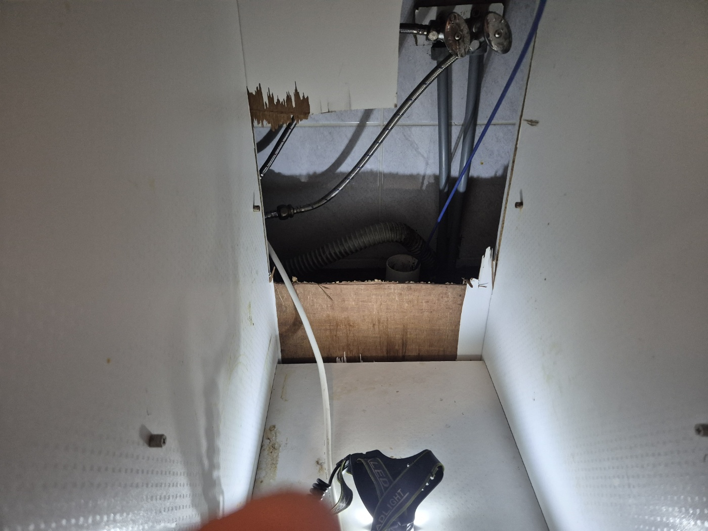
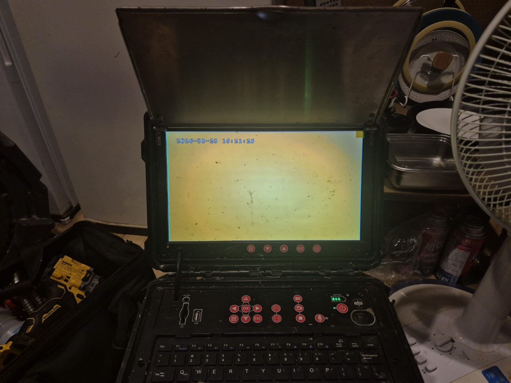
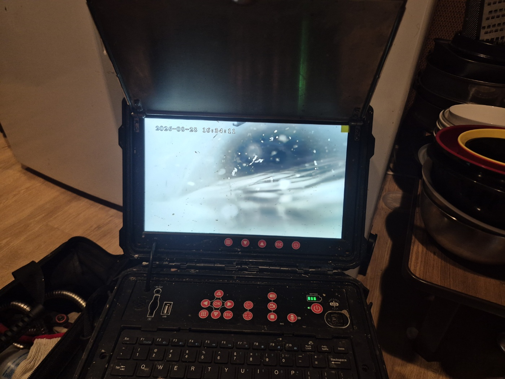
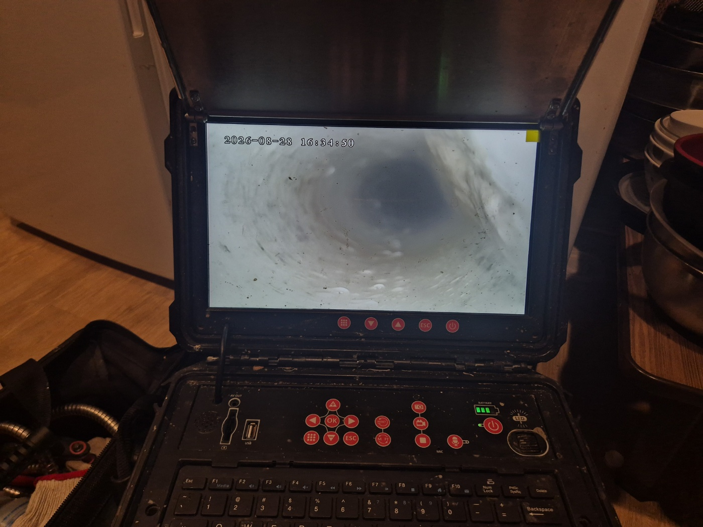

안녕하세요.. 고고고 설비입니다.. 오늘은 평택시 소사벌에 있는 마사지샵에서 하수구막힘, 싱크대막힘 신고를 받고 다녀온 현장입니다. 손님용 세면대 물이 잘 안 빠져서 영업에 지장이 있다고 하셨어요.
1. 현장 도착과 장비 준비
전동 와이어 장비와 내시경 카메라를 함께 챙겨서 현장에 도착했습니다. 배관 위치부터 파악해야 해서 벽 쪽 점검구부터 확인하기로 했어요. 상가 특성상 배관이 벽 안쪽으로 매립돼 있어서 정확한 위치를 찾는 게 우선이었습니다.
2. 점검구를 열어 배관 확인
벽면 점검구를 열어보니 안쪽에 냉온수 배관과 배수 호스가 얽혀서 지나가고 있었습니다. 헤드랜턴을 비춰가며 배관이 이어지는 방향을 하나씩 확인했고, 좁은 틈 사이로 손을 넣어가며 위치를 짚어야 했어요.

3. 내시경으로 막힘 구간 확인
내시경 카메라를 배관 안쪽으로 넣어보니 화면이 뿌옇게 흐려질 정도로 이물질이 가득 차 있었습니다. 카메라를 조금씩 더 밀어 넣을 때마다 화면이 점점 어두워져서, 막힌 구간이 생각보다 깊다는 걸 알 수 있었어요.

4. 작업 진행
전동 와이어로 안쪽을 반복해서 밀어 넣고 빼내며 막힌 부분을 뚫어나갔습니다. 한 번에 시원하게 뚫리지 않아서 케이블을 여러 차례 넣었다 빼며 조금씩 이물질을 풀어냈어요. 중간중간 내시경으로 진행 상황을 계속 확인했습니다.

5. 통수 확인
작업을 마치고 다시 한번 내시경으로 확인해보니, 이전과 다르게 배관 안쪽이 훤히 뚫려있는 게 보였습니다. 물을 내려서 잘 빠지는 것까지 최종 확인했고, 사장님도 직접 확인하시고 안심하셨어요.

마사지샵처럼 여러 손님이 자주 이용하는 업장은 배수 사용량이 많은 만큼, 배관 상태를 정기적으로 점검해주시는 게 재발을 막는 데 도움이 됩니다. 특히 세면대와 손님용 화장실은 사용 빈도가 높아 남들보다 조금 더 신경 써서 관리해주시는 게 좋습니다.
고고고 설비는 주택, 아파트, 원룸, 상가, 공장의 생활 하수 오수 배관을 관리해 주는 업체입니다. 고고고 설비에 전화 주시면 친절상담 정확한 진단 확실한 해결로 보답해 드리겠습니다!!